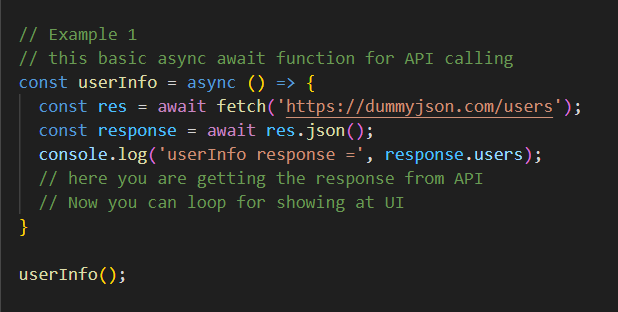
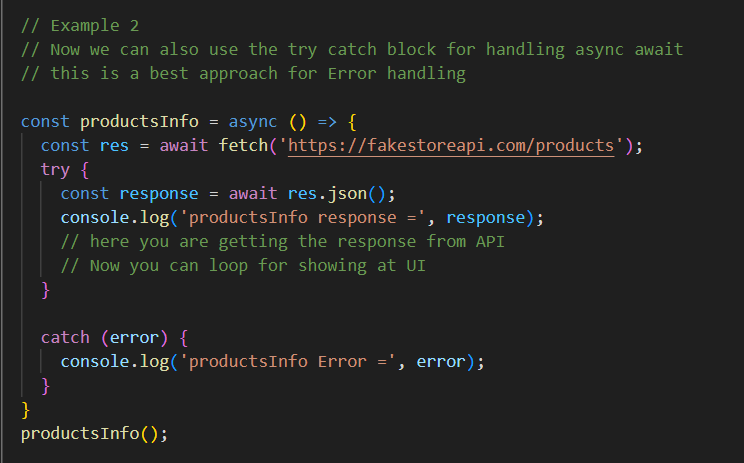
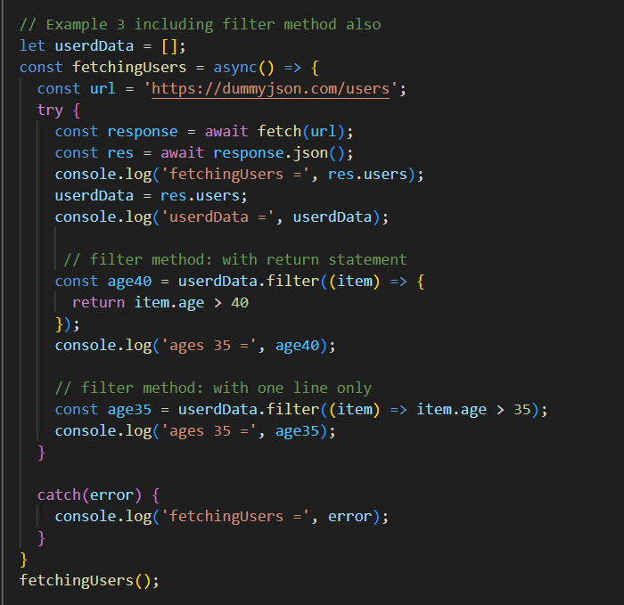

How to fetch API with async await ?
Together, async/await and the Fetch API both provide a powerful, efficient, and easy to understand.
Async/await works by allowing developers to define functions as async and then use the await keyword to wait for the result of a promise to resolve.
Fetch API is designed to work with asynchronous operations, which allows making the requests to an API or server without blocking the main thread of the application and always fetch() method returns a Promise.


